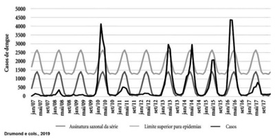
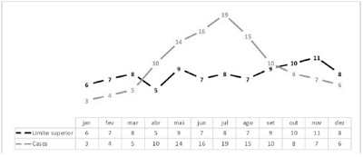
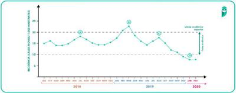
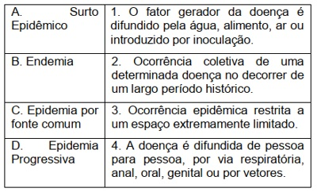
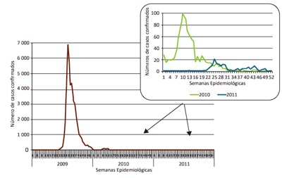
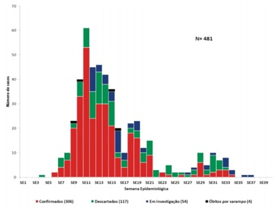
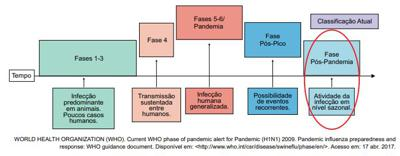

Questão 1 · Medicina Preventiva · 4000194453Diversos estudos sobre Covid-19 foram publicados nos últimos dois anos contribuindo para um maior conhecimento da doença, levando a melhores resultados no manejo dos casos e na implementação de medidas preventivas. Ao contrário do que se pensava no início da pandemia, sabe-se hoje que uma mesma pessoa pode ser reinfectada e adquirir a doença várias vezes. A reinfecção é possível devido à seguinte característica do bioagente da doença:
A baixa virulência
B baixa infectividade
C baixa patogenicidade
D baixa imunogenicidade
Questão 2 · História Natural das Doenças · 4000190410O lapso de tempo entre os primeiros sintomas da doença e o início dos sinais e sintomas com os quais o diagnóstico pode ser estabelecido é chamado de período
A de incubação.
B latente.
C prodrômico.
D de observação.
E pré-patogênico.
Questão 3 · Dif erenças entre Incidência e Prevalência · 4000190155Nos meses que compreendem o inverno, é notório o aumento dos casos de infecção das vias respiratórias altas. O aumento das aglomerações em ambientes fechados associado ao aumento da umidade do ar está entre os fatores sociais e ambientais que contribuem na repetição desse padrão a cada ano. No primeiro e no segundo ano da pandemia iniciada em 2020, observou-se que a Covid-19 apresentou variação_______________semelhante ao de outras infecções respiratórias, quando analisada a ______________desse grupo de doenças ao longo dos anos. Assinale a alternativa que preenche corretamente as lacunas.
A cíclica / virulência
B sazonal / transmissibilidade
C cíclica / incidência
D secular / prevalência
Questão 4 · Dose inf ectante · COVID 19 · Virulência · 4000190150O surgimento da nova subvariante _______________ do coronavírus desencadeou uma alteração inesperada desse padrão: houve aumento expressivo do número de casos da doença no verão. Entretanto, o número de casos graves e a de mortes pela doença foi substancialmente menor quando comparado aos anos anteriores, mostrando que apesar da nova cepa ter maior_______________, ela não foi mais _______________, naquele período. Assinale a alternativa que preenche correta e respectivamente as lacunas.
A Delta / patogenicidade / letal
B Ômicron / infectividade / virulenta
C Delta / virulência / infecciosa
D Ômicron / patogenicidade / invasiva
Questão 5 · Variações sazonais ou sazonalidade · Distribuição das doenças em grupos populacionais Pessoa · 4000189900A Bronquiolite tem uma época do ano (Inverno) que apresenta um aumento de casos, portanto pode ser considerada.
A Endemia.
B Doença Crônica.
C Pandemia.
D Sazonal/Surto.
Questão 6 · Medicina Preventiva · 4000185208Em julho de 2022, a Organização Mundial da Saúde (OMS) decretou que a doença varíola dos macacos, também conhecida como monkeypox, tornou-se uma emergência de saúde pública global. Isso significa que houve um aumento da transmissibilidade por provável mutação viral. Mas não se notou o aumento de casos graves ou fatais até o momento do decreto da OMS. Nesse sentido, conclui-se que o vírus manteve seu(sua)
A poder invasivo.
B dose infectante.
C virulência.
D patogenicidade.
E imunogenicidade.
Questão 7 · Outros · Epidemias por f onte comum ou f onte única ou veículo comum · 4000184772Os eventos epidêmicos podem se apresentar de duas formas distintas quanto à magnitude e temporalidade dos casos. Neste sentido, as epidemias podem variar quanto aos fatores envolvidos no processo de transmissão, velocidade de ocorrência dos casos e duração. Pode-se afirmar, neste contexto de epidemias, que:
A nas de fonte comum, o número de casos aumenta de forma rápida, estando este aumento relacionado ao período de incubação do agente etiológico.
B as propagadas tendem a apresentar um número explosivo de casos em curto período de tempo.
C nas propagadas, as pessoas suscetíveis costumam ter contato com uma única fonte de contaminação por um curto ou longo espaço de tempo.
D as de fonte comum costumam ter seus processos de transmissão associados a vetores artrópodes ou através de contato pessoa-pessoa.
Questão 8 · Inf ectologia · Monitoramento de Endemias e Epidemias o diagrama de controle · 4000184754A dengue é uma arbovirose urbana de grande relevância para a saúde pública em função da alta morbidade relacionada a eventos epidêmicos. A análise da distribuição temporal da ocorrência de dengue permite compreender a dinâmica da doença e avaliar a evolução dos níveis de transmissão. Pode-se a rmar, com base no gráfico a seguir e considerando os componentes de séries temporais e construção de diagramas de controle, que: Série temporal de caso de dengue no período de 1° de janeiro de 2007 a 31 de dezembro de 2017, no Distrito Federal, Brasil.

A a análise da tendência histórica de uma doença transmissível não é uma informação útil para avaliar a efetividade de uma medida de controle.
B não existe evidência de efeito de componente sazonal na série temporal de dengue apresentada no enunciado.
C os anos de 2010 e 2016 não podem ser considerados epidêmicos, conforme observase no gráfico.
D uma forma de obter o limite máximo esperado do diagrama de controle para monitoramento de notificações mensais é baseada na média mensal de casos de períodos anteriores do mês de referência acrescido de 1,96 vezes o desvio-padrão.
Questão 9 · Medicina Preventiva · 4000184316O número básico de reprodução R0 (R zero) foi muito estudado durante a pandemia de COVID-19. A INFORMAÇÃO DADA POR ESSE CONCEITO É:
A O número de pessoas que são contaminadas por um indivíduo, depois que ocorre uma estabilização no número de pessoas contaminadas.
B O número de pessoas que são potencialmente contaminadas por um patógeno, após o início da vacinação.
C O número mais alto de contaminação, que corresponde ao fim da fase de ascensão da curva epidêmica.
D O número de pessoas que são contaminadas por um indivíduo infectado pelo patógeno, em um ambiente em que ninguém adquiriu imunidade.
Questão 10 · Pandemias · 4000184040Assinale a alternativa correta sobre pandemias.
A Na falta da Organização Mundial da Saúde (OMS), representantes de pelo menos dois países de cada continente podem declarar a existência de uma pandemia.
B As pandemias tendem a ter duração de pelo menos 5 anos até serem controladas em sua gravidade.
C O coeficiente de letalidade de uma determinada doença em uma pandemia é maior do que em uma epidemia.
D A última pandemia antes da covid-19 foi a da influenza A, causada pelo vírus H1N1.
Questão 11 · Inf ectividade · 4000184031Assinale a alternativa relacionada à capacidade que têm certos microorganismos de penetrar e de se desenvolver ou de se multiplicar no novo hospedeiro, ocasionando infecção.
A Letalidade.
B Virulência.
C Infectividade.
D Patogenicidade.
Questão 12 · Medicina Preventiva · 4000183728Segundo dados do Boletim Epidemiológico 135 – Boletim COE coronavírus - semana epidemiológica (SE) 41 (9/10 a 15/10/22), “a média móvel de casos registrados foi de 4.236, enquanto na SE 40 (8/10 a 14/10/2022), foi de 5.788, ou seja, houve uma redução de 47% no número de casos novos na semana atual. Quanto aos óbitos, a média móvel de óbitos registrados na SE 41 foi de 44, representando uma redução de 47% em relação à média de registros da SE 40”. BRASIL. Ministério da Saúde. Secretaria de Vigilância em Saúde. Boletim epidemiológico especial 135: doença pelo novo coronavírus (Covid-19). 2022, com adaptações. Considerando o texto apresentado, a medida que descreve o número de novos casos de determinadas doenças em um território denomina-se
A prevalência.
B autóctone.
C alóctone.
D incidência.
E frequência.
Questão 13 · Epidemias · 4000183553Qual é a melhor definição de epidemia?
A Incidência maior que o dobro da média esperada;
B Incidência maior que a média esperada mais 2,96 desvios-padrão;
C Incidência maior que a média esperada mais 1,96 desvio-padrão;
D Incidência maior que o triplo da média esperada.
Questão 14 · Medicina Preventiva · 4000182653De acordo com a epidemiologia descritiva, consideram-se, para a análise e manejo de doenças e agravos, as variáveis relacionadas com o tempo, lugar e pessoa (onde, quando e quem) é atingido ou acometido por determinada doença/agravo. São exemplos de tais variáveis:
A tempo: tempo de incubação de uma doença. Lugar: espaço geográfico de preocupação. Pessoa: Raça/cor, idade, gênero e sexo.
B tempo: tempo de incubação de uma doença. Lugar: local de nascimento do paciente acometido. Pessoa: Expectativa de vida.
C tempo: Idade do paciente. Lugar: local de nascimento do paciente acometido. Pessoa: Expectativa de vida.
D tempo: Idade do paciente. Lugar: grupo etário ao qual o paciente pertence. Pessoa: renda média no país em que a pessoa vive.
E tempo: variações climáticas no local de residência do paciente. Lugar: espaço geográfico de preocupação. Pessoa: renda média no país em que a pessoa vive.
Questão 15 · Medicina Preventiva · 4000182144Um recurso utilizado para estimar o potencial epidêmico de uma doença transmissível é o chamado número básico de reprodução (RO), que representa o número médio de indivíduos que poderão ser infectados a partir de um caso, desde que nenhuma medida preventiva seja estabelecida e que haja 100% de susceptibilidade populacional. A partir de uma pessoa infectante e após cinco gerações de transmissão, uma doença com R0 = 2 atingirá um número médio de casos equivalente a:
A 48
B 18
C 32
D 12
Questão 16 · Monitoramento de Endemias e Epidemias o diagrama de controle · 4000181206O diagrama de controle é uma técnica estatística comumente utilizada para identi car processos endêmicos e epidêmicos. A partir dessa informação, analise o diagrama a seguir. Com base nesse diagrama, assinale a alternativa correta.

A A doença permaneceu endêmica durante todo o ano.
B A doença apresentou um caráter endêmico durante os meses de abril a setembro.
C A doença apresentou um caráter epidêmico durante os meses de janeiro a março.
D A doença apresentou um caráter epidêmico durante os meses de abril a setembro.
E A doença apresentou um caráter epidêmico durante os meses de outubro a dezembro.
Questão 17 · Padrões de Distribuição das Doença Tempo Pessoa Espaço ou Lugar · 4000181201A epidemiologia descritiva constitui uma ciência fundamental para compreender o comportamento de determinada doença, eventos ou agravos à saúde. Assinale a alternativa que apresenta, corretamente, as três características primordiais para descrever os agravos à saúde.
A Classe social, estilo de vida e escolaridade.
B Epidemia, endemia e pandemia.
C Idade, raça e etnia.
D Pessoa, tempo e local.
E Prevalência, incidência e letalidade.
Questão 18 · Prevenção Primária · Epidemias · 4000190955Em relação às epidemias, é correto afirmar que
A a dinâmica é determinada pelas características da localidade, variabilidade das cepas e padrão de resistência aos antimicrobianos.
B o tratamento precoce e a quimioprofilaxia são os meios mais efetivos de prevenir epidemias de maior transmissibilidade e infectividade.
C malária, tuberculose e esquistossomose estão entre as principais causas de epidemias em países tropicais de baixa renda, como o Brasil.
D um grande número de bactérias, fungos, helmintos e protozoários são associados a grandes epidemias, e o conhecimento de sua biologia tem melhorado as medidas preventivas específicas.
E vacinas são eficazes na prevenção de epidemias e funcionam tanto em nível individual, quanto em nível populacional.
Questão 19 · Variações Cíclicas · 4000176110As flutuações, na incidência de uma doença, ocorridas em um período maior que um ano é denominada de:
A Endemia.
B Surto.
C Variações sazonais.
D Variações cíclicas.
Questão 20 · Variações acíclicas ou irregulares · 4000176032Surtos e epidemias são variações não esperadas na magnitude da ocorrência de doenças. Eles são variações:
A Geográficas
B Temporais
C Pessoais/populacionais
D Espaciais
Questão 21 · Pandemias · 4000175809Qual vírus foi responsável pela maior pandemia desses dois últimos anos?
A Coronavirus
B Influenza
C Rinovírus
D Ebola
E Hantavirus
Questão 22 · Epidemias · 4000175534A elevação do número de casos de uma doença ou agravo, em determinado lugar e período de tempo, caracterizando de forma clara um excesso em relação à frequência esperada, denomina-se:
A surto
B epidemia
C endemia
D epizootia
Questão 23 · Epidemias · Investigação de Surtos · 4000174844De acordo com o Guia de Vigilância em Saúde, sobre a investigação epidemiológica de casos, surtos e epidemias, assinalar a alternativa INCORRETA:
A A investigação epidemiológica não se distingue da pesquisa epidemiológica, visto que ambas decorrem da necessidade de uma resposta rápida para que as medidas de controle possam ser instituídas.
B A investigação epidemiológica de campo, muitas vezes, não permite que se cumpra todo o rigor metodológico científico necessário para o planejamento e execução da pesquisa epidemiológica.
C A gravidade do evento representa um fator que condiciona a urgência no curso da investigação epidemiológica e na implementação de medidas de controle.
D As investigações epidemiológicas de campo iniciam-se, com frequência, sem hipótese clara. Geralmente, requerem o uso de estudos descritivos para a formulação de hipótese que, posteriormente, deverão ser testadas por meio de estudos analíticos.
E Uma investigação epidemiológica normalmente é uma ação coordenada de resposta que envolve diferentes setores para cumprimento de todas as suas necessidades.
Questão 24 · Pandemias · 4000170536Em março de 2020 foram registrados 1.050 casos novos de COVID-19 no Espírito Santo. Os casos estavam distribuídos por todo o estado. Destes, 21 evoluíram para óbito. Foram realizadas entrevistas e coletaram sangue, urina e fezes dos doentes. O mesmo procedimento foi executado com os familiares e vizinhos sem a doença. Sabendo-se que a população do estado era de 6 milhões de habitantes na ocasião e que a doença teve origem na China responda a questão: O quadro acima descrito caracteriza um(a)?
A Surto.
B Pandemia.
C Endemia.
D Epidemia.
Questão 25 · Pandemias · 4000168454Quando a ocorrência de uma doença afeta simultaneamente vários países ou mais de um continente com números excessivos em relação ao esperado, trata- se de:
A endemia.
B epidemia.
C epizootia.
D pandemia.
E surto epidêmico.
Questão 26 · Surtos · 4000168424O surto epidêmico é definido por:
A ocorrência epidêmica localizada em áreas geográficas extensas.
B concentração de casos de uma mesma doença.
C ocorrência epidêmica restrita a um espaço delimitado.
D concentração de casos não relacionados entre si.
E concentração de casos restritos a uma semana.
Questão 27 · Dif erença entre Endemias e Epidemias · 4000168246Em relação à distribuição das doenças no tempo e lugar, é certo que:
A O surgimento de um único caso autóctone de uma determinada doença em uma região onde nunca tenha ocorrido representa uma epidemia.
B O surgimento de um único caso alóctone de uma determinada doença em uma região onde nunca tenha ocorrido representa uma epidemia.
C Endemia refere-se à presença usual de uma doença, dentro dos limites esperados, em uma determinada área geográfica, por um período limitado.
D Surto é uma ocorrência endêmica, na qual todos os casos estão relacionados entre si, atingindo uma área geográfica pequena e delimitada.
E Pode-se definir epidemia como a elevação brusca, temporária e significativamente acima do esperado da prevalência de uma determinada doença.
Questão 28 · Monitoramento de Endemias e Epidemias o diagrama de controle · 4000167171O diagrama de controle é uma ferramenta essencial para o acompanhamento da frequência de agravos e doenças, de modo a identi car a ocorrência de epidemias. No eixo Y, é apresentada a medida de incidência da condição, enquanto, no eixo X, é representado o tempo utilizado, por exemplo, meses. No diagrama de controle, uma condição é considerada epidêmica se a curva de ocorrência mensal ultrapassar
A a média histórica do mês.
B o teto histórico dos meses anteriores.
C a média histórica dos meses anteriores.
D o limiar endêmico inferior.
E o limiar endêmico superior.
Questão 29 · Investigação de Surtos · 4000163799Considerações importantes na investigação de surtos agudos de doenças infecciosas incluem a determinação de um surto ocorrido de fato e definição da população sob risco, determinação da propagação e do reservatório e caracterização do agente. São etapas comumente utilizadas na investigação, EXCETO:
A Observar as combinações (interações) de variáveis relevantes.
B Testar hipóteses.
C Implementar medidas de controle.
D Examinar a distribuição dos casos.
Questão 30 · Epizootias · 4000174129Assinale a alternativa correta sobre epizootia em primatas não humanos e febre amarela.
A A informação da morte de macacos pode partir de qualquer cidadão ou instituição.
B A vigilância entomológica é incompatível com a vigilância da febre amarela.
C A investigação entomológica deve ser feita por, pelo menos, quatro profissionais.
D O material de eleição para o diagnóstico de febre amarela em primatas doentes é o linfonodo.
E A coleta de amostras para diagnóstico deve ser feita preferencialmente longe do local onde o animal foi encontrado doente ou morto.
Questão 31 · Endemias · 4000173758Se a incidência da uma nova doença infecciosa (como a Covid-19) se estabiliza em níveis constantes, ainda que altos, por um período de 10 anos, podemos dizer que neste caso estaremos diante de uma:
A Surto global
B Pandemia permanente
C Epidemia global
D Endemia
Questão 32 · Classif icação das epidemias por extensão geográf ica · 4000173686Classif icação das epidemias por tipo de população acometida Classif icação das epidemias pela velocidade de progressão Sobre as epidemias:
A Explosiva: existência de transmissão direta
B Fonte comum: existência de foco circunscrito
C Fonte persistente: existência de foco direto
D Fonte comum: baixa velocidade de propagação
E Nenhuma das anteriores está correta
Questão 33 · Curvas Epidêmicas · 4000173685Segundo as fases de risco de pandemia de influenza (OMS), podemos afirmar, exceto:
A Fase 4 - são detectados um ou vários conglomerados pequenos com transmissão limitada de pessoa a pessoa.
B Fase 1 - não se tem detectado um novo subtipo do vírus em seres humanos, mas um subtipo que tem causado infecção humana está presente em animais.
C Fase 2 - não se tem detectado um novo subtipo do vírus em seres humanos, mas um subtipo de vírus da influenza animal que circula representa um risco considerável para o homem.
D Fase 5 - a transmissão é crescente e continuada na população geral.
E Fase 3 - detecção de um ou vários casos de infecção humana com um novo subtipo.
Questão 34 · Pandemias · 4000173684A sétima pandemia de cólera foi originária da ilha:
A Sulawesi-Célebes
B Madagascar
C Fernando de Noronha
D Chimbote
E Haiti
Questão 35 · Endemias · 4000173672Pode-se definir holoendemia como:
A Epidemia difundida a partir de uma fonte comum, em que o fator extrínseco é veiculado por água, alimento ou ar ou introduzido por inoculação.
B Endemia de alto nível de infecção que começa no início da vida e afeta a maior parte da população.
C Ocorrência epidêmica caracterizada por larga distribuição espacial.
D Aquela de desenvolvimento lento, na qual a doença se difunde de pessoa a pessoa por via respiratória, anal, oral, genital ou por vetores, de modo que os casos identificados não pode ser atribuídos a agentes transmitidos a partir de uma única fonte.
E Nenhuma das anteriores.
Questão 36 · Introdução · Sarampo · Epidemias · 4000172677Sobre o dispositivo: Fonte da imagem: https://veja.abril.com.br/saude/rio-de-janeiro-tem-primeira-morte-por-sarampo-em-vinte-anos I. Um único caso de sarampo em um país onde este foi erradicado pode ser considerado uma epidemia. II. A vitamina A, utilizada no tratamento do sarampo, é exemplo de prevenção primária. III. É recomendada uma dose de vacina de sarampo para bebês de seis meses de idade, mas mesmo nesse grupo imunizado precocemente devem ser feitas 2 doses dessa vacina após 1 ano de idade. Marque a opção correta:
A Todas corretas
B I e II são corretas
C Todas incorretas
D II e III são corretas
E I e III são corretas
Questão 37 · Curvas Epidêmicas · Epidemias · 4000172290Quando em uma região ocorre um aumento do número de casos novos de uma doença aguda, ultrapassando a incidência normal esperada, o processo epidêmico é denominado:
A Pandemia.
B Epidemia.
C Endemia.
D Surto.
Questão 38 · Pandemias · 4000171662O alvo primário da saúde pública, em um contexto de pandemia, é:
A Promover cuidado amplo aos infectados.
B Proteger os não infectados.
C Promover a coleta de dados compulsória em virtude de sua melhor fidedignidade para determinar as políticas públicas.
D Determinar o isolamento do infectados.
E Determinar o isolamento dos sintomáticos.
Questão 39 · Investigação de Surtos · 4000171201Segundo MOPECE - Módulo 6: controle de doenças na população, as medidas de prevenção e controle podem estar voltadas para a destruição do agente e/ou para evitar o contato entre hospedeiro e agente. Para evitar o contato hospedeiro-agente, as ações fundamentais estão voltadas a: I. Isolar e limitar o movimento dos casos altamente contagiosos, quando existe grande número de suscetíveis na área, ou isolar os mais suscetíveis. II. Buscar, identi car e tratar os doentes e portadores, através da detecção, diagnostico, noti cação, tratamento e acompanhamento de casos até seu período de convalescença e total recuperação. III. Usar quimioterápicos e medidas tradicionais, como a pasteurização do leite e outros produtos. Está(ão) CORRETO(S):
A Somente o item I.
B Somente o item II.
C Somente os itens I e II.
D Somente os itens II e III.
E Todos os itens.
Questão 40 · Padrões de Distribuição das Doença Tempo Pessoa Espaço ou Lugar · 4000153347A epidemiologia pode ser conceituada como a ciência que estuda o processo saúde/doença em coletividades, analisando a distribuição e os fatores contribuintes para os agravos em saúde, subsidiando a elaboração de medidas de prevenção, controle e erradicação de doenças, além do suporte para o planeja- mento, gestão e avaliação das ações e dos serviços de saúde (ALMEIDA FILHO; ROUQUAYROL, 2006). Com base na conceituação de epidemiologia e sua perspectiva em descrever a ocorrência de agravos em saúde, pode-se a rmar que a epidemiologia descritiva consiste na avaliação de três características primordiais. Sobre essas características, assinale a alternativa correta.
A Clínica (diagnóstico, prognóstico e terapêutica individual), estatística (abordagem de doenças pelo método numérico) e medicina social (tomar coletivamente a questão da saúde).
B Pessoa (idade, sexo, nível de instrução, entre outras), tempo (tendências, variações cíclicas, sazonais e irregulares) e espaço (diferentes espaços, como continentes, países, estados, municípios e até pequenos agrupa- mentos populacionais).
C Promoção (atividades dirigidas à transformação dos comportamentos), proteção (esforço de se antecipar à doença) e recuperação da saúde (melhoria do estado de saúde da pessoa por meio de alguma intervenção terapêutica).
D Características sociodemográficas (sexo, idade, classe social, entre outras), hábitos de vida (prática de atividade física, alimentação, consumo de bebidas alcoólicas, tabagismo) e morbidades (doenças/agravos pelos quais o indivíduos estão acometidos).
E Exploratória (identificar fatores associados aos agravos em saúde), explicativa (identificar fatores de risco para o desenvolvimento de doenças) e qualitativa (investigação de aspectos psicossociais relacionados ao desenvolvimento de doenças).
Questão 41 · Endemias e Epidemias · 4000153340Considerando que o H1N1 já tinha um medicamento pronto para tratar a doença (Tami u) e que as vacinas da gripe já existiam, foi relativamente rápida a adaptação pelos cientistas para a produção de uma nova vacina. No caso específico do Sars-CoV-2, não existe uma droga pronta para o seu tratamento e não há nenhum integrante da família coronavírus, nem Sars, nem Mers, para os quais exista uma vacina base para fazer mudanças e usar contra o novo coronavírus. Em relação às ações que podem ser mais e cazes e viáveis para evitarmos um aumento da pandemia de Covid-19, assinale a alternativa correta.
A Quarentena para todos os casos suspeitos e confirmados.
B Campanha em massa de prevenção da disseminação do vírus.
C Isolamento de todos os casos confirmados por exames de contraprova.
D Evitar aglomerações e idas injustificadas aos serviços de pronto-atendimento.
E Os estudos científicos e as pesquisas publicadas mostram alta eficácia da vacina.
Questão 42 · Monitoramento de Endemias e Epidemias o diagrama de controle · 4000152046O isolamento de grupos de maior risco, como hipertensos, diabéticos e idosos, em relação ao Covid-19, com o intuito de retardar a velocidade de propagação da onda pandêmica, diminuindo assim seu impacto na saturação da demanda por cuidados intensivos e seus impactos econômicos na sociedade, chama-se:
A Quarentena.
B Lockdown.
C Distanciamento social.
D Isolamento horizontal.
E Isolamento vertical.
Questão 43 · Intervalos de Tempo Relevantes na Epidemiologia de Doenças Transmissíveis · Medicina Preventiva · 4000146925Classif icação de casos Sobre os termos utilizados na epidemiologia das doenças transmissíveis, assinale a alternativa INCORRETA.
A Eliminação é a erradicação de uma doença de uma área geográfica, como a eliminação da poliomielite das Américas.
B Caso primário é o primeiro caso da doença; aquele que a introduz na coletividade.
C Caso-índice é o primeiro paciente diagnosticado e levado ao conhecimento do pessoal dos serviços. sempre será o caso primário.
D Caso secundário é o que se segue ao primário, decorrido o tempo representado pela duração de um período de incubação.
E Erradicação é o completo desaparecimento da transmissão de agentes patogênicos da doença (incidência igual a zero.
Questão 44 · Processos Endêmicos e Epidêmico Endemias e Epidemias · 4000146402A endemia de uma doença infecciosa em uma determinada região
A pode ser facilmente eliminada com medidas de monitoramento.
B é definida como a situação em que há casos em número estável ao ano sem a existência de surtos epidêmicos.
C é definida como a situação em que há condições para a transmissão dessa doença, e o agente infeccioso circula entre os habitantes.
D depende de casos alóctones para persistir como uma endemia.
E ocorre sempre após passar pela fase epidêmica.
Questão 45 · Epidemias · Epidemiologia · 4000145047A obesidade tem sido considerada uma epidemia. Esta afirmação é:
A Incorreta, porque a obesidade não é uma doença transmissível
B Incorreta, porque a obesidade não é uma doença aguda e leva anos para se desenvolver
C Correta, porque é uma doença muito prevalente a um problema de saúde pública
D Correta, porque a obesidade possui um componente genético
E Correta, porque a incidência atual excede a linha de base histórica.
Questão 46 · Processos Endêmicos e Epidêmico Endemias e Epidemias · 4000143933“A presença constante de uma doença em determinada zona geográfica” à esta definição é caracterizado:
A Surto
B Epidemia
C Zoonose parcial
D Endemia
E Pandemia
Questão 47 · Curvas Epidêmicas · Epidemias · 4000143929Sobre a taxa de propagação de um vírus em meio a uma população ao longo do tempo, que é essencial para lidar com epidemias, analise a frase: O número médio de indivíduos contagiados por cada infectado nas condições existentes em um momento, assinale a correta:
A Re ou Rt
B R0(erre zero) menos 1
C R1+R0(errer zero) dividido por Rt
D Rt divido por R0(erre zero)
E R0(erre zero) +R1 multiplicado por Rt
Questão 48 · Endemias · 4000143116Endemia significa que uma doença:
A Ocorre em excesso em relação da expectativa de normalidade.
B Está habitualmente presente em determinada população humana.
C Afeta grande número de países simultaneamente.
D Exibe um padrão sazonal.
E É prevalente entre animais.
Questão 49 · Medicina Preventiva · Epidemias · 4000142719Pode-se afirmar que caracteriza uma epidemia:
A a presença usual, e prevista, de dada doença, em dado local, por um período de tempo limitado
B o aparecimento de um único caso alóctone em uma região onde nunca tenha ocorrido determinada doença
C o aparecimento de um único caso autóctone em uma região onde nunca tenha ocorrido determinada doença
D a presença usual, e prevista, de dada doença, em dado local, por um período de tempo ilimitado
Questão 50 · COVID 19 · Pandemias · 4000142626As autoridades chinesas noti caram casos de uma misteriosa pneumonia na cidade de Wuhan, metrópole chinesa com 11 milhões de habitantes. A Organização Mundial de Saúde (OMS) emitiu o primeiro alerta em dezembro de 2019 e a doença, provocada pela variação originada na China, foi o cialmente nomeada como COVID-19, em fevereiro de 2020. Pouco tempo depois, vários países do mundo relataram casos do novo coronavírus (SARS-Cov 2). Analisando as afirmativas abaixo, por que COVID-19 caracteriza-se como uma pandemia?
A pelo aumento repentino de casos da doença, em curto espaço de tempo, porém dentro do limite esperado para o período.
B pelo aumento dos casos da doença em áreas muito restritas, porém dentro do limite esperado para o período.
C pelo aumento de casos da doença, em um período determinado, em vários países ao mesmo tempo.
D pelo aumento do número de casos da doença, acima do limite máximo esperado para o período, com tempo de duração ilimitado.
E pelo aumento do número de mortes pela doença, em curto espaço de tempo, em vários países ao mesmo tempo.
Questão 51 · Endemias · 4000142584A presença usual de uma doença, dentro dos limites esperados, em uma determinada área geográ ca por um período de tempo ilimitado, refere-se ao conceito de
A epidemia.
B pandemia.
C endemia.
D agravo.
Revisar: possível letra faltando em enunciado
Questão 52 · COVID 19 · Endemias e Epidemias · 4000142144Ao longo dos anos, observa-se o surgimento e ressurgimento de doenças no mundo. A COVID-19 é uma doença emergente que foi recentemente identi cada. O sarampo é uma doença reemergente no Brasil. O país recebeu, em 2016, o certificado de região livre de sarampo endêmico, perdendo-o em 2018, após nova disseminação da doença. Analise as afirmativas abaixo, quanto aos fatores que contribuem para emergência e reemergência de doenças: I. – Fatores demográficos e sociais: urbanização, aglomeração de pessoas. II. – Fatores ecológicos: desmatamento, inundações, mudanças climáticas, secas, inundações. III. – Aumento do intercâmbio internacional de pessoas e de produtos: transporte de pessoas, alimentos, costumes. IV – Novas tecnologias na atenção à saúde: uso de cateteres, tratamentos que diminuem a resposta imunológica, exames invasivos. Estão corretas
A apenas I e II.
B apenas II e III.
C apenas I e IV.
D apenas I e III.
E todas as afirmativas.
Questão 53 · Medicina Preventiva · Medidas de saúde coletiva · Epidemiologia · 4000141942A pandemia COVID-19 trouxe à tona uma série de conceitos epidemiológicos utilizados com o sentido de verificar a evolução histórica de doenças, a e cácia das diversas medidas preventivas e os riscos populacionais. Conceitos epidemiológicos foram amplamente debatidos nas várias mídias, incluindo as redes sociais. Indicadores menos conhecidos e modelos preditores matemáticos vêm sendo usados, obrigando todos os pro ssionais de saúde a se familiarizarem com eles. Conceitos como período de latência e indicadores, como probabilidade de transmissão e numero de reprodução (Rt), passaram a ser empregados amplamente. A taxa de ocupação de leitos de UTI tem sido utilizada como indicador da capacidade do sistema de saúde nesta pandemia COVID-19. O índice "Número de Reprodução de casos (R)” é determinado pelo número
A de casos novos acumulados e notificados durante a semana .
B médio de casos secundários determinados após exposição a um caso índice.
C de casos capazes de reproduzir a doença em uma comunidade (infectantes).
D de casos susceptíveis de uma comunidade que ainda não adquiriram a doença.
Questão 54 · Medicina Preventiva · Vigilância Epidemiológica · 4000141856Processos Endêmicos e Epidêmico Endemias e Epidemias Quais das seguintes doenças/epidemias são ocasionadas por um coronavírus de origem animal?
A MERS (Oriente Médio, 2012); SARS (China, 2002).
B MERS (Oriente Médio, 2012); Gripe Suína (México, 2009).
C SARS (China, 2002); Ebola (Congo, 2019).
D Ebola (Congo, 2019); Gripe Suína (México, 2009).
E MERS (Oriente Médio, 2012); Ebola (Congo, 2019).
Questão 55 · Curvas Epidêmicas · 4000140622Uma das preocupações dos órgãos públicos da Saúde no enfrentamento da pandemia causada pelo SARS-CoV-2 é a segunda onda epidêmica. Assinale a alternativa que apresenta o fator que influencia diretamente a ocorrência de uma nova onda epidêmica.
A A taxa de letalidade da covid-19 na primeira onda.
B A proporção de suscetíveis na população.
C A testagem sorológica em massa.
D A subnotificação dos casos confirmados de covid -19.
Questão 56 · Epidemias · 4000137533Pode-se afirmar que caracteriza uma epidemia:
A a presença usual, e prevista, de dada doença, em dado local, por um período de tempo limitado.
B o aparecimento de um único caso alóctone em uma região onde nunca tenha ocorrido determinada doença.
C o aparecimento de um único caso autóctone em uma região onde nunca tenha ocorrido determinada doença.
D a presença usual, e prevista, de dada doença, em dado local, por um período de tempo ilimitado.
Questão 57 · Epidemias · Sistema de Inf ormação de Agravos de Notif icação SINAN · 4000133224Distribuição espacial das doenças Espaço ou Lugar Sobre os conceitos de epidemiologia, medicina preventiva e saúde coletiva, assinale a alternativa INCORRETA:
A É considerado caso suspeito quando apresenta sinais e sintomas compatíveis com determinada doença, mas sem evidência de exames laboratoriais; caso confirmado é aquele com evidência definitiva de laboratório, com ou sem sinais e/ou sintomas compatíveis com a doença. No curso de uma epidemia, a confirmação pode ser feita por critério clínico-epidemiológico, exceto nos primeiros casos, que deverão ter confirmação laboratorial.
B Caso autóctone é o caso oriundo do mesmo local onde ocorreu e caso alóctone é o caso importado de uma outra localidade.
C Investigação epidemiológica é um trabalho de campo, realizado a partir de casos notificados e seus contatos, cujo propósito final é orientar a recomendação e adoção oportuna de medidas de controle para impedir a ocorrência de novos casos.
D O Sistema de Informação de Agravos de Notificação (SINAN) tem como objetivo coletar e processar dados sobre doenças/agravos de notificação em todo o território nacional, desde o nível local até o nacional. A entrada de dados é feita a partir de formulários padronizados para cada doença/agravo, que deve ser preenchido por qualquer profissional de saúde, diante de um caso suspeito de doença/agravo. Somente o profissional médico pode realizar a notificação de qualquer doença ou agravo.
E Período de incubação e
Questão 58 · Incidência e Prevalência · Distribuição espacial das doenças Espaço ou Lugar · Letalidade · 4000133223Em Londrina, em 09/03/2020, foi confirmado laboratorialmente o primeiro caso de COVID- 19 em residente do município. O paciente era proveniente de um país europeu, com epidemia instalada de COVID-19. No período de 09/03/2020 a 31/08/2020 o número de casos de residentes, confirmados laboratorialmente foi de 6.350 e ocorreram 200 óbitos por COVID-19 de residentes do município, neste período. A população do município é de 575.377 habitantes (estimativa IBGE para 2020). Considerando as informações acima, assinale a alternativa CORRETA:
A O coeficiente de incidência, no período, foi de 1.103 casos por 1 milhão de habitantes, o coeficiente de mortalidade por COVID foi de 34,7 por 100.000 habitantes e a taxa de letalidade foi de 3,14 por 1.000 casos confirmados.
B A epidemia em Londrina, foi considerada somente quando foram confirmados 1.726 casos e o coeficiente de incidência alcançou 300 casos em 100.000 habitantes.
C O caso em questão é considerado autóctone, por tratar-se de residente do município.
D A taxa de letalidade mede a proporção de óbitos pela doença na população geral e representa o risco de morte pela doença entre aqueles que tem a doença.
E O coeficiente de incidência mede a quantidade de casos novos em determinado período e no município de Londrina, foi de 1.103 casos novos por 100.000 habitantes no período analisado.
Questão 59 · Intervalos de Tempo Relevantes na Epidemiologia de Doenças Transmissíveis · 4000133220Lista Nacional de Notif icação Compulsória de doenças agravos e eventos de saúde pública Assinale a alternativa INCORRETA:
A São doenças ou agravos de notificação compulsória, entre outras: acidente de trabalho com exposição a material biológico; acidente de trabalho grave, fatal e em crianças e adolescentes; coqueluche; eventos adversos graves ou óbitos pós-vacinação; doenças exantemáticas (rubéola e sarampo); violência sexual e tentativa de suicídio, Síndrome Respiratória Aguda Grave (SRAG), infecção pelo Coronavírus (COVID-19), arboviroses (dengue, zika vírus, chikungunya, febre amarela).
B Um quadro infeccioso pode se apresentar de forma clínica ou subclínica como, por exemplo, a Dengue e a Covid-19.
C Epizootia é a ocorrência somente de doenças de animal ou de grupo de animais que possa apresentar riscos ä saúde pública humana.
D Endemia se refere à presença usual de uma doença, dentro dos limites esperados, em uma determinada área geográfica, por um período de tempo ilimitado, por exemplo: dengue em Londrina.
E Surto é o aumento pouco comum no número de casos relacionados epidemiologicamente, de aparecimento súbito e disseminação localizada em um espaço específico; epidemia é a ocorrência de casos de doença ou outros eventos de saúde com uma incidência maior que a esperada para uma área geográfica e períodos determinados.
Questão 60 · Medicina Preventiva · Epidemias · Investigação de Surtos · 4000131034Quando um evento epidêmico ocorre de forma auto-limitada em uma área geográfica restrita e delimitada, denomina-se:
A Pandemia
B Endemia
C Surto
D Progressão epidêmica
E Egressão sazonal
Questão 61 · Medicina Preventiva · Epidemias · 4000129818Assinale a alternativa
A Denomina-se surto epidêmico quando a duração da epidemia é restrita a um mês.
B As ações de controle e vigilância, idealmente, devem se encerrar em até 7 dias após se retornar ao nível endêmico.
C A regressão de uma doença infecciosa se dá em até 48 h após se atingir o limiar máximo de incidência.
D A pandemia ocorre quando há propagação da doença infecciosa com uma larga distribuição espacial e, também, por 90 ou mais dias.
E Uma epidemia pode durar um intervalo de tempo que compreenda horas, dias ou, até mesmo, meses.
Questão 62 · Medicina Preventiva · Epidemias · 4000129813Assinale a alternativa
A Contrariamente à epidemia, que é temporalmente ilimitada, a endemia é restrita a um intervalo de tempo determinado.
B A incidência de uma doença pode diminuir e sair do nível epidêmico pela importação de casos alóctones.
C A eventual endemicidade obtida após o decréscimo da incidência da doença pode se dar até mesmo em níveis inferiores à eclosão epidêmica.
D Numa curva epidêmica, uma primeira etapa tem um ramo ascendente de casos que, pela história natural das doenças infecciosas, termina dentro de 30 a 60 dias.
E A regressão é a última fase de evolução de uma epidemia e sempre termina com a erradicação da doença.
Questão 63 · Construção do diagrama de controle · Endemias · Dif erença entre Endemias e Epidemias · 4000137307Um epidemiologista montou o seguinte diagrama de controle da doença “Z”, que é considerada endêmica na cidade de Aquidauana, no Mato Grosso do Sul. O diagrama contém o comportamento da referida enfermidade entre os meses de janeiro de 2018 e fevereiro de 2020. Após a análise do diagrama, o epidemiologista fez as seguintes afirmativas: I. Os pontos “A” e “C” possivelmente correspondem às variações sazonais da doença “Z”. II. O ponto “B” é uma variação temporal do tipo acíclica, podendo corresponder a uma epidemia. III. Uma doença endêmica pode evoluir de forma epidêmica, se as condições epidemiológicas permitirem. Está correto o que se afirma em:

A I e II.
B II e III.
C I e III.
D Todas as assertivas estão corretas.
E Todas as assertivas estão incorretas.
Questão 64 · anf ixenoses · 4000120481A função de reservatório é central no ciclo biológico de manutenção das doenças infecciosas. Os animais e vegetais podem atuar como reservatórios. Sobre as anfixenoses, podemos afirmar:
A O reservatório consiste nas populações de animais irracionais.
B O reservatório consiste apenas nos seres humanos.
C O reservatório consiste em fungos.
D O reservatório consiste em humanos e animais irracionais.
E Nenhuma das anteriores está correta.
Questão 65 · Endemias · 4000114650Assinale a alternativa que melhor define o conceito de endemia:
A Ocorrência de uma doença infecciosa, contagiosa, de extensão rápida em uma certapopulação.
B Epidemia generalizada, afetando praticamente todo o mundo.
C Presença constante de uma doença em determinada zona geográfica.
D Série de vários surtos epidêmicos.
Questão 66 · Processos Endêmicos e Epidêmico Endemias e Epidemias · 4000100965Correlacione a primeira coluna com a segunda:

A A- 2, B – 4, C – 1, D-3.
B A-3, B-2, C-4, D- 1.
C A-3, B-2, C- 1, D-4.
D A-2, B-3, C-4, D1.
Questão 67 · caso autóctone · 4000086561Em epidemiologia de doença infecciosa, caso autóctone é:
A surgido a partir do contato com o caso-indice
B atualmente presente na área de estudo
C adquirido de outra região
D de origem local
Questão 68 · Surtos · 4000077944Uma ocorrência epidêmica restrita a uma área geográ ca muito delimitada (por exemplo: casa de repouso, escola, quartel, restaurante) é denominada
A pandemia.
B endemia.
C surto.
D egressão.
E bioterrorismo.
Revisar: possível letra faltando em enunciado
Questão 69 · casoíndice · Vigilância Epidemiológica · 4000077919Em vigilância epidemiológica, o primeiro caso notificado oficialmente é denominado
A caso índice.
B caso autóctone.
C caso alóctone.
D caso importado.
E caso secundário.
Questão 70 · Surtos · 4000074505Você foi chamado para comparecer à creche localizada na área de atuação da sua Unidade Básica de Saúde, pois a coordenadora suspeita de doze casos de doença do pé, da mão e da boca em crianças atendidas pela creche no dia de hoje. Após a visita, você comprova clinicamente essa informação. Essa situação é considerada como:
A Epidemia.
B Surto.
C Endemia.
D Pandemia.
Questão 71 · Epidemias · 4000073054A análise da representação grá ca de uma epidemia observou-se que houve uma elevação rápida no número de casos, seguida de um curto platô e então da diminuição também rápida destes, caracterizando um pico de base relativamente estreita. Esta representação grá ca sugere, dá pista, de que a causa da epidemia provavelmente possui todas as características abaixo, EXCETO:
A Exposição simultânea dos indivíduos acometidos.
B Fonte única.
C Tipo de agente único.
D Atuação maciça do agente em um curto período de tempo.
E Transmissão por contato direto pessoa a pessoa.
Revisar: possível letra faltando em enunciado
Questão 72 · Epidemias · 4000068083A vigilância epidemiológica identifica uma epidemia que, em um breve intervalo de tempo, apresenta uma rápida progressão, até atingir uma incidência máxima. Podemos classificá-la como:
A Explosiva.
B Propagada.
C De contágio.
D Expansiva.
E Origem em bairros diferentes com transmissão de pessoa a pessoa.
Questão 73 · Investigação de Surtos · 4000047707No quadro a seguir, está indicado o número de casos de Salmonelose por Faixa Etária (FE) em anos e as semanas (Sem) de ocorrência da doença. Um valor semanal superior duas vezes à média aritmética é considerado critério de alarme e necessita de investigação. Com base nas informações contidas no quadro, responda a questão. Assinale a alternativa que contém a(as) faixa(s) etária(s) (FE) que ultrapassa(m) o critério de alarme.

A Todas as FE
B 0-14 e 15 - 29
C Apenas 15 - 29
D Apenas 0 - 14
E 0-14 e 30 e +
Questão 74 · Incidência e Prevalência · Processos Endêmicos e Epidêmico Endemias e Epidemias · 4000036724A compreensão do comportamento das doenças na população é fundamental para a determinação das medidas de controle. Uma doença é dita endêmica quando, no decorrer de um largo período histórico, acomete sistematicamente grupos humanos distribuídos em espaços delimitados e caracterizados. Se, entretanto, ela apresenta uma elevação progressivamente crescente com tendência a acometer um grande número de pessoas ao mesmo tempo, é denominada epidemia. Algumas doenças endêmicas podem tornar-se epidêmicas. A observação de seu comportamento ao longo do tempo é a essência da ação de vigilância em saúde. A respeito da avaliação do comportamento da doença em um determinado ano, é correto afirmar que deve ser verificada:
A A incidência mensal média, que representa a média da incidência em todos os meses do ano anterior.
B A frequência máxima esperada, que representa a máxima incidência mensal no ano anterior.
C O limite superior da incidência normal, que é a média das incidências anuais máximas nos cinco anos anteriores.
D A distribuição da incidência mensal média, que representa a média da incidência para cada mês do ano nos dez anos anteriores.
Questão 75 · Endemias · 4000030070Refere-se à presença usual de uma doença, dentro dos limites esperados, em uma determinada área geográ ca, por um período de tempo limitado. Esse fenômeno suscetíveis ocorre quando há uma constante renovação de comunidade, exposição múltipla e repetida destes a um determinado agente, isolamento relativo sem descolamento importante da população em uma zona territorial. Trata- se do conceito de
A endemia.
B epidemia.
C surto.
D variação irregular.
Revisar: possível letra faltando em enunciado
Questão 76 · Distribuição espacial das doenças Espaço ou Lugar · 4000019348Ana Maria está pesquisando sobre a distribuição dos casos de dengue em Fortaleza. Utilizando o sistema de monitoramento diário de agravos (SIMDA) da Prefeitura, ela visualiza o mapa abaixo, referente aos casos de dengue do ano de 2019. Em relação ao padrão espacial de distribuição de casos em Fortaleza, podemos afirmar que ele é:

A Focal.
B Regular.
C Aleatório.
D Clusterizado.
Questão 77 · Epidemias · Endemias · 4000017585Hipoteticamente, há 50 anos não ocorriam casos de uma determinada doença infectocontagiosa no estado do Espírito Santo, enquanto no Amazonas ocorrem, em média, 10 casos dessa mesma doença anualmente. Sendo confirmado no ano em curso um único caso autóctone dessa doença no Espírito Santo e 10 casos no Amazonas, pode- se considerar, respectivamente, essa situação como:
A Endemia e endemia.
B Epidemia e endemia.
C Caso esporádico e epidemia.
D Epidemia e epidemia.
Questão 78 · Curvas Epidêmicas · 4000152943Os gráficos a seguir mostram a distribuição dos casos de Síndrome respiratória aguda Grave (SRAG) confirmados para in uenza A/H1N1, por semana epidemiológica de início dos sintomas no Brasil a partir da Semana Epidemiológica (SE) 16/2009 até a semana 52/2011. Disponível em: <http://portalweb04.saude.gov.br/influenza/default.asp>. Acesso em: 26 jun. 2019 (adaptado). De acordo com as informações apresentadas nos gráficos, é correto afirmar que

A o ano de 2011 apresenta surto epidêmico de SRAG por influenza A/H1N1.
B o pico de casos confirmados em 2009 foi 10 vezes maior que o pico de casos em 2010.
C o número de casos de SRAG confirmados foi maior nas semanas 25 de 2009, 2010 e 2011.
D a tendência entre 2009 e 2011 foi de estabilização dos casos confirmados de SRAG por influenza A/H1N1.
E o pico de casos confirmados aconteceu entre as semanas 29 e 33 em 2009, na semana 10 em 2010 e na semana 25 em 2011.
Questão 79 · Endemias e Epidemias · 4000125586Em relação à AIDS, enquanto um problema de saúde pública, é INCORRETO afirmar:
A Trata-se de uma endemia, pois já é uma doença estabilizada e apresenta frequência dentro do esperado.
B Pode ser classificada como uma doença emergente.
C É uma das epidemias mais ameaçadoras da atualidade, não respeita fronteiras, distribui-se universalmente, e, por isso, é considerada uma pandemia.
D Ao longo do tempo, a doença vem passando por fenômenos como feminização (tendência ao aumento de casos entre mulheres) e interiorização (dispersão de casos para além dos grandes centros urbanos).
E Embora com aumento na sobrevida de pacientes infectados e portadores da doença, não se deve amenizar as estratégias de prevenção e controle.
Questão 80 · Epidemias · 4000123222Conceitua-se epidemia, para fins de vigilância epidemiológica, como a ocorrência de:
A um número de casos de uma doença acima do esperado, para um determinado período e local.
B um grande número de casos confirmados de uma doença em um determinado local de um país.
C um grande número de casos de uma doença por um período de pelo menos três meses consecutivos.
D um grande número de casos de uma doença por um período de pelo menos seis meses consecutivos.
E casos de uma doença que atingem toda a população de um local com abrangência definida.
Questão 81 · Endemias · 4000115668Sobre a endemia, assinale a alternativa CORRETA.
A Intensidade de caráter endêmico de determinada doença, em determinados lugar eintervalo cronológico definido, caracterizada por uma elevação de rápida progressão.
B Alteração espacial e cronologicamente delimitada do estado de saúde-doença de umapopulação, caracterizada por uma elevação progressivamente crescente e ultrapassando o limiar epidêmico preestabelecido.
C Ocorrência de uma determinada doença que, no decorrer de um longo período,acomete grupos humanos em espaços delimitados e mantém a sua incidência constante.
D Ocorrência epidêmica caracterizada por uma ampla distribuição espacial, ultrapassando os limites de fronteira, acometendo grupos populacionais em curto intervalo de tempo.
E Doença localizada no espaço, temporalmente limitada, presente em uma população, e cuja incidência se situe fora dos limites prévios convencionados.
Questão 82 · Monitoramento de Endemias e Epidemias o diagrama de controle · 4000114252Observando uma tabela com o número mensal de casos de meningite meningocócica de uma determinada região, nota-se aumento súbito de casos no mês de junho, passando de uma média mensal aproximada de 12 casos para 18 casos naquele mês. Deve-se considerar:
A Existe uma epidemia e que se deva proceder vacinação na população de risco
B Não é uma epidemia e, portanto só resta manter a observação e o controle dos casos novos já que o aumento em número foi de apenas 50%.
C É necessário verificar a procedência ou a localização dos casos para determinar se é ou não uma epidemia antes de realizar a vacinação.
D Verificar se há compatibilidade com o diagrama de controle da doença antes de tomar qualquer decisão.
E Se não estiver dentro dos parâmetros do diagrama de controle da doença, proceder de imediato à vacinação dos susceptíveis.
Questão 83 · Monitoramento de Endemias e Epidemias o diagrama de controle · 4000106585Qual instrumento metodológico é utilizado em Vigilância Epidemiológica para definir a existência ou não de um a epidemia?
A Comparação da prevalência com municípios vizinhos
B Comparação da incidência com municípios vizinhos
C Busca ativa de casos utilizando visitas domiciliares
D Construção de um diagrama de controle
Questão 84 · Endemias · 4000102039Uma determinada doença, que, no decorrer de um longo período, acomete sistematicamente indivíduos distribuídos em espaços delimitados de tempo:
A Endêmica.
B Sazonal.
C Temporal.
D Esporádica.
Questão 85 · Surtos · 4000094103O que acontece quando há o aumento repentino do número de casos de uma doença em uma região especí ca? Ou seja, quando o aumento de casos é maior do que o esperado pelas autoridades.
A Epidemia.
B Surto.
C Endemia.
D Pandemia.
E Nenhuma das respostas acima.
Revisar: possível letra faltando em enunciado
Questão 86 · Letalidade · 4000093938Como se chama o indicador, dentre os abaixo, que representa o maior ou menor poder que uma doença tem de provocar a morte das pessoas?
A Letalidade.
B Incidência.
C Prevalência.
D Endemia.
E Morbidade.
Questão 87 · Epidemias · 4000093919Como se chama, dentre as opções abaixo o registro de casos de uma mesma doença em número que ultrapassa a incidência normal esperada em uma cidade:
A Endemia.
B Surto epidêmico.
C Epidemia.
D Pandemia.
E Febre.
Questão 88 · Endemias · 4000093851A ocorrência habitual de uma doença ou a presença permanente de um agente infeccioso em determinada área geográ ca denomina-se:
A Epidemia.
B Surto.
C Endemia.
D Infestação.
E Pandemia.
Revisar: possível letra faltando em enunciado
Questão 89 · Estudos Epidemiológicos · Processos Endêmicos e Epidêmico Endemias e Epidemias · 4000090392Na maioria dos estudos epidemiológicos, adota-se, convencionalmente, para funcionar como faixa endêmica de doença, a faixa de
A incidência normal esperada com 95% de probabilidade.
B incidência normal esperada com 99% de probabilidade.
C prevalência normal esperada com 66,7% de probabilidade.
D prevalência calculada com 95% de probabilidade.
E prevalência calculada com 99% de probabilidade.
Questão 90 · Endemias · 4000087235"A ____________consiste na presença continua de uma enfermidade ou de um agente infeccioso em uma zona geográ ca determinada, pode também expressar a prevalência usual de uma doença particular em uma zona geográ ca . O termo _____________signi ca a transmissão intensa e persistente, atingindo todas as faixas etárias, por sua vez, a ____________refere-se a um nível de infecção, que começa a partir de uma idade precoce e afeta a maior parte da população jovem, como, por exemplo, a malária, em algumas regiões do globo." Assinale a alternativa que completa correta e seqüencialmente a afirmativa anterior:
A Endemia / hiperendemia /holoendemia;
B Epidemia / hiporendemia / haloendemia;
C Endemia / hipoendemia / haloendemia;
D Epidemia / hiperendemia / haloendemia;
E Epidemia / hiperendemia / holoendemia;
Revisar: possível letra faltando em enunciado
Questão 91 · Endemias · 4000078254Se uma doença acomete sistematicamente indivíduos distribuídos em espaços delimitados de tempo mantendo sua incidência constante, podemos defini-la como:
A Sazonal.
B Endêmica.
C Temporal.
D Esporádica.
E Epidêmica.
Questão 92 · caso alóctone ou caso importado · 4000065936Na epidemiologia da doença infecciosa, o caso alóctone significa
A aquisição da doença no local sob investigação.
B caso novo de uma doença transmissível, surgido por contaminação do caso-índice.
C paciente com síndrome clínica compatível com a doença, porém sem confirmação laboratorial do agente etiológico.
D caso atualmente presente na área sob consideração, na qual chega por via terrestre.
E pessoa de quem foi isolado e identificado o agente etiológico.
Questão 93 · Endemias · 4000065899A definição de endemia é a ocorrência
A de doença ou agravo em um número de pessoas, num mesmo local ou localidade próxima ao mesmo tempo, ou curto período.
B epidêmica caracterizada por larga distribuição mundial atingindo várias nações.
C epidêmica restrita a um espaço extremamente delimitado.
D endêmica da obesidade, por exemplo, ocorrendo em faixa etária de 4 -8 anos.
E coletiva de determinada doença que, no decorrer de um largo período histórico, acomete sistematicamente grupos humanos distribuidos em espaços delimitados e caracterizados, mantendo sua incidência constante.
Questão 94 · Medicina Preventiva · 4000065471Patógenos microbianos podem ser usados como armas de guerra, no chamado bioterrorismo. O Centro para Controle de Doenças (CDC) nos Estados Unidos classifica os riscos biológicos potenciais em três categorias: A, B e C. Os da categoria A são os que apresentam prioridade máxima, principalmente por serem de fácil disseminação e provocar taxas elevadas de mortalidade. Dentre as doenças abaixo, a classificada como de categoria "A" pelo CDC é a (o)
A brucelose.
B psitacose.
C varíola.
D influenza pandêmica.
E tifo exantemático.
Questão 95 · Curvas Epidêmicas · 4000054393Qual a ultima fase na evolução de uma epidemia?
A Progressão
B Estabilização
C Egressão
D Regressão
Questão 96 · Variações Cíclicas · 4000054346Qual alternativa indica o aumento periódico da incidência de determinada doença?
A Variações sazonais
B Epidemias
C Pandemias
D Variações cíclicas ida oib pr ed
Questão 97 · Epidemias · 4000051578Quando há aumento do número de casos de uma doença ou agravo, em determinado lugar e período de tempo, cando caracterizado de forma nítida um excesso em relação à frequência esperada, podemos dizer que está ocorrendo:
A Epidemia
B Surto
C Endemia
D Epizootia
E Pandemia
Questão 98 · Curvas Epidêmicas · 4000034657Assinale a alternativa que apresenta CORRETAMENTE a última fase na evolução de uma epidemia.
A Egressão.
B Estabilização.
C Progressão.
D Regressão.
Questão 99 · Construção do diagrama de controle · 4000026285O diagrama de controle caracteriza-se por um método gráfico utilizado pela vigilância epidemiológica para o acompanhamento da evolução temporal das doenças. O último passo para a sua construção, considerando uma distribuição normal, é:
A A plotagem da incidência mensal da doença sob vigilância correspondente ao ano de acompanhamento.
B O cálculo do desvio padrão para cada incidência média mensal.
C O cálculo da incidência média mensal de um período anterior, geralmente dez anos.
D O estabelecimento de um intervalo de variação esperado para a incidência mensal da doença.
Questão 100 · Epidemias · 4000022057A elevação do número de casos de uma doença ou agravo, em determinado lugar e período de tempo, caracterizando de forma clara um excesso em relação à frequência esperada, denomina-se:
A surto
B epidemia
C endemia
D epizootia
E pandemia
Questão 101 · Variações sazonais ou sazonalidade · 4000021988As variações na incidência de uma doença cujos ciclos coincidem com as estações do ano são denominadas de:
A variações cíclicas
B variações sazonais
C variações irregulares
D epidemia
E endemia
Questão 102 · Classif icação das epidemias pelo tipo de f onte · 4000019819A Secretaria de Saúde do Estado de Roraima noti cou ao Centro de Informações Estratégicas em Vigilância em Saúde do Ministério da Saúde um caso suspeito de sarampo, no município de Boa Vista/RR, ocorrido no dia em 14/02/2018. Até o dia 17/09/2018, foram noti cados 481 casos suspeitos de sarampo, destacando-se 273 casos no município de Boa Vista, 81 em Amajarí, 60 em Pacaraima, 15 em Rorainópolis, 14 em Cantá, 06 em Caracaraí, 04 em Alto Alegre; entre outros municípios. Considerando esse cenário e a figura que mostra a distribuição dos casos noti cados, confirmados e em investigação de sarampo, como deve ser considerada a situação epidemiológica do sarampo no estado?

A Pandemia.
B Surto epidêmico.
C Epidemia propagada.
D Epidemia por fonte comum.
Questão 103 · Monitoramento de Endemias e Epidemias o diagrama de controle · 4000005924Como pode ser estabelecido o limite superior da faixa endêmica ou limite epidêmico em um diagrama de controle de ocorrência de um agravo/doença, para cada semana epidemiológica?
A Incidência média observada nos últimos anos.
B Incidência máxima observada nos últimos anos.
C Incidência média observada nos últimos anos, acrescida de 1,96 desvio padrão das incidências observadas.
D Incidência máxima observada nos últimos anos, acrescida de 1,96 desvio padrão das incidências observadas
E Incidência mínima observada nos últimos anos, acrescida de 1,96 desvio padrão das incidências observadas.
Questão 104 · Epizootias · 4000127606Uma epizootia de febre amarela em um primata, associada à evidência de circulação viral em vetores, outros primatas não humanos, ou humanos, no local provável de infecção, é classificada como
A descartada.
B em investigação.
C confirmada, por critério laboratorial.
D confirmada, por vínculo epidemiológico.
E indeterminada.
Questão 105 · Epidemias · Dif erença entre Endemias e Epidemias · 4000125952Texto 1 Grande SP registra 2 mortes por febre amarela em 3 casos confirmados A Secretaria de Saúde de São Paulo [informou] 03 casos confirmados de pessoas infectadas por febre amarela na Região Metropolitana de São Paulo. Duas morreram. A terceira pessoa é uma mulher de 27 anos que está internada no Hospital das Clínicas onde foi submetida a um transplante de fígado e está em coma, segundo a assessoria do hospital. Elas teriam contraído a doença em Mairiporã, cidade a cerca de 40 km de São Paulo, durante as festas de m de ano. São as primeiras mortes de febre amarela de pessoas infectadas na Grande São Paulo desde que começou a série de mortes de macacos infectados no ano passado. A Prefeitura de Mairiporã informou que investiga 20 casos suspeitos de febre amarela noti cados desde 13 de dezembro [2017]. Seriam 18 moradores da cidade, 01 de Santo André e 01 de São Paulo. Dos 20 casos suspeitos, 09 pessoas morreram. Fonte: https://www.promedmail.org/pt - 06 jan 2018. A situação relatada demonstra claramente a ocorrência de uma:
A Pandemia.
B Endemia.
C Epidemia.
D Epizootia.
E Nenhuma das anteriores.
Questão 106 · Epidemias · 4000124511Que medida, dentre as abaixo, é a mais adequada para a elaboração de um diagrama de controle que vise a detecção de uma epidemia?
A Incidência.
B Prevalência.
C Razão de chances.
D Risco relativo.
E Risco atribuível.
Questão 107 · Medicina Preventiva · Epidemiologia · Endemias e Epidemias · 4000121158Em relação à distribuição das doenças no tempo e lugar é certo que:
A O surgimento de um único caso autóctone de uma determinada doença em uma região onde nunca tenha ocorrido representa uma epidemia.
B O surgimento de um único caso alóctone de uma determinada doença em uma região onde nunca tenha ocorrido representa uma epidemia.
C Endemia refere-se à presença usual de uma doença, dentro dos limites esperados, em uma determinada área geográfica, por um período de tempo limitado.
D Surto é uma ocorrência endêmica, onde todos os casos estão relacionados entre si, atingindo uma área geográfica pequena e delimitada.
E Pode-se definir epidemia como sendo a elevação brusca, temporária e significativamente acima do esperado da prevalência de uma determinada doença.
Questão 108 · Distribuição temporal das doenças Tempo · 4000101978A Epidemiologia descritiva estuda a frequência e a distribuição de um evento de saúde em populações segundo algumas variáveis. Sobre a variável Tempo, marque a opção correta:
A É importante para avaliar a presença de uma epidemia, tendência, variações cíclicas ousazonais
B É importante para saber se a frequência de um desfecho é maior em um determinadolocal. Por exemplo: país, estado, cidade, etc
C É importante para avaliar quais são os grupos de pessoas mais acometidos paradeterminado desfecho segundo características relacionadas à idade, sexo, hábitos de vida e estado civil
D É importante para determinar os fatores de risco para a doença
Questão 109 · Epizootias · 4000100332O conceito de epizootias, como a de febre amarela no Brasil podem ser definidas como:
A Transmissão endêmica na população, associada a vetores artrópodes silvestres.
B Aumento de casos de febre amarela em humanos que se infectaram nas matas.
C Aumento de casos em animais de forma não usual.
D Doença em animais silvestres com potencial de circulação em humanos.
Questão 110 · caso autóctone · 4000088130A noti cação de um caso em uma área “local” e com confirmação de não ser importado de outra localidade significa um caso:
A De surto.
B Alóctone.
C Autóctone.
D Epidêmico.
E Caso sentinela.
Questão 111 · Epidemias · 4000088115O registro, numa coletividade ou região, de casos de uma mesma doença em número que ultrapassa a incidência normal esperada denomina-se:
A Endemia.
B Surto epidêmico.
C Epidemia.
D Pandemia.
E Febre.
Questão 112 · Endemias · 4000088100A ocorrência habitual de uma doença ou a presença permanente de um agente infeccioso em determinada área geográ ca denomina-se:
A Epidemia.
B Surto.
C Endemia.
D Infestação.
E Pandemia.
Revisar: possível letra faltando em enunciado
Questão 113 · Incidência · 4000081834A taxa que expressa a frequência de casos novos de uma determinada doença ou problema de saúde, durante um período definido, numa população sob o risco de desenvolver a doença, chama-se:
A Incidência.
B Coeficiente.
C Epidemia.
D Prevalência.
Questão 114 · Endemias · 4000064731Doenças tem comportamentos esperados e, as vezes, variáveis. Uma determinada doença que, no decorrer de um longo período histórico, acometa sistematicamente indivíduos distribuídos em espaços delimitados, mantendo sua incidência constante, pode ser definida como:
A Epidêmica.
B Sazonal.
C Esporádica.
D Endêmica.
Questão 115 · Incidência · 4000061910A medida de frequência epidemiológica que é definida como a razão entre o número de casos novos de uma doença que incidem em uma comunidade em um intervalo de tempo determinado e o número de habitantes de uma população expostos durante o mesmo período denominamos de:
A epidemia.
B incidência.
C surto.
D endemia.
E pandemia.
Questão 116 · Medicina Preventiva · 4000061893Qual das doenças a seguir é de transmissão direta imediata:
A Cólera
B Gonorreia
C Hanseníase
D Sarampo
E Citomegalovirose
Questão 117 · caso autóctone · 4000059813Segundo a epidemiologia a definição de caso oriundo do mesmo local onde ocorreu, refere-se à:
A Epidemia
B Surto
C Autóctone
D Alóctone
E Endemia
Questão 118 · Endemias · 4000054160Entende-se por comportamento endêmico de uma doença quando:
A Apresenta uma variação sazonal bem definida.
B Sua ocorrência apresenta-se na comunidade de forma regular.
C Ocorre em grande número de países simultaneamente.
D Sua ocorrência está claramente em excesso ao normal esperado.
E É transmitida para outras populações, infesta mais de uma cidade ou região.
Questão 119 · Distribuição temporal das doenças Tempo · 4000045197A epidemiologia descritiva considera variáveis circunstanciais relacionadas a tempo, lugar e pessoa. Assinale a alternativa que contém variáveis epidemiológicas relacionadas a tempo:
A tendência secular e variação interestadual
B variação sazonal, procedência e estado civil
C ocupação, idade e variação
D tendência secular, variação cíclica e variação sazonal
E nenhuma das alternativas anteriores
Questão 120 · Surtos · Epidemias · 4000037243Surtos e epidemias são variações não esperadas na magnitude da ocorrência de doenças. Eles são variações:
A geográficas.
B temporais.
C pessoais/populacionais.
D espaciais.
E sazonais.
Questão 121 · Variações Cíclicas · 4000029071Em epidemiologia existem variações em relação ao tempo, uma delas é a Variação Cíclica que:
A Consiste nas variações que apresentam ciclos periódicos e regulares.
B Estabelece alterações inusitadas na incidência das doenças, diferente do esperado.
C Caracteriza-se pela periodicidade do fenômeno ocorrer sempre nas mesmas estações do ano.
D Demonstra variações na incidência/prevalência de doenças por um longo período de tempo.
E Define uma abordagem recorrente e nova para detecção de epidemias em tempo real.
Questão 122 · Variações sazonais ou sazonalidade · 4000023189As variações na incidência de uma doença cujos ciclos coincidem com as estações do ano são denominadas de:
A Variações cíclicas.
B Variações sazonais.
C Variações irregulares.
D Epidemia.
E Endemia.
Questão 123 · Epidemias · 4000021595O registro, numa coletividade ou região, de casos de uma mesma doença em número que ultrapassa a incidência normal esperada denomina-se:
A endemia.
B epidemia.
C pandemia.
D surto.
Questão 124 · Epidemias · Endemias · 4000020517Ausência ou presença de agravos estão relacionadas a uma dinâmica de fatores sociais, ambientais e políticos que determinam as características do processo saúde/doença. Nesta definição de características, se estabelecem as endemias e epidemias. Sobre as definições relacionadas às endemias e epidemias, assinale a alternativa correta:
A Endemicidade é a média aritmética das incidências brutas ou trabalhadas, ocorridas nos meses de mesma denominação.
B Incidência mensal média é a intensidade de caráter endêmico de determinada doença, em determinado lugar e intervalo cronológico.
C Faixa endêmica é o espaço nos limites do qual as medidas de incidência podem flutuar sem que se possa inferir ter havido alteração sistêmica.
D O diagrama de controle é um instrumento gráfico utilizado para o acompanhamento das epidemias instaladas nas populações.
Questão 125 · Surtos · 4000018386Neuza, 41 anos, comerciante, moradora da Serra – ES é levada, por seus familiares, ao Hospital por estar desacordada. Sua mãe relata que a lha começou a sentir mal, logo após um jantar de casamento ocorrido no dia anterior, sente forte dor abdominal, associada a náuseas, vômitos e diarreia intensa que perdurou por toda a noite. No dia seguinte, apresentou-se debilitada e desacordada sendo levada imediatamente para o Hospital. Outras pessoas que estiveram presentes no casamento deram entrada também no Pronto Socorro com os mesmos sintomas no mesmo dia. Como a vigilância epidemiológica considerou o caso da Neuza após a notificação:
A Epidemia progressiva.
B Surto epidêmico.
C Pandemia.
D Endemia.
E Epidemia propagada.
Questão 126 · Características Gerais · 4000127572A figura abaixo representa as fases da In uenza Pandêmica de 2009 estabelecidas pela Organização Mundial da Saúde (OMS). Atualmente, a fase de alerta pandêmico para H1N1 é a de pós-pandemia. Considerando a figura e as informações apresentadas, assinale a alternativa correta sobre o estado de preparação e resposta à pandemia de H1N1.

A Na fase 3, a transmissão direta de pessoa a pessoa do vírus recombinante já é suficiente, segundo a OMS, para sustentar surtos em comunidades.
B Na fase 4, a OMS realiza o desenvolvimento e a distribuição de insumos voltados para a produção de vacinas específicas para controle da pandemia.
C Na fase 5, a maioria dos países está sob risco de ocorrência dessa doença e, por essa razão, ela é considerada como pandêmica pela OMS.
D Na fase 6, a OMS agiliza todo o processo de revisão da disseminação do vírus, por meio de transmissão direta, para controle de pandemia.
Questão 127 · Bioterrorismoarma biológica · 4000061550Patógenos microbianos podem ser usados como armas de guerra no chamado bioterrorismo. O Centro para Controle de Doenças, nos Estados Unidos (CDC), classifica os riscos biológicos potenciais em três categorias: A, B e C. Os da categoria A são os que apresentam prioridade máxima, principalmente por serem de fácil disseminação e provocar taxas elevadas de mortalidade. Dentre as doenças abaixo, qual é classificada como de categoria "A" pelo CDC?
A Brucelose.
B Psitacose.
C Varíola.
D Influenza pandêmica.
E Tifo exantemático.
Questão 128 · Curvas Epidêmicas · 4000057374Epidemia tem sido conceituada como a ocorrência de doença em grande número de pessoas ao mesmo tempo. Assinale a opção CORRETA quanto aos tipos e critérios diferenciais das epidemias:
A epidemia explosiva
B epidemia lenta
C epidemia propagada
D epidemia por fonte comum
E todas as opções estão corretas.
Questão 129 · Medicina Preventiva · 4000060413Nos aspectos diferenciais das epidemias, a existência de transmissão direta é critério de uma epidemia tipo:
A Progressiva.
B Fonte pontual.
C Fonte persistente.
D Explosiva
E Lenta.
Questão 130 · Medicina Preventiva · 4000028510Sobre os modos de transmissão das doenças, marque a alternativa que contém a associação CORRETA:
A Transmissão direta mediata – Uretrite não gonocócica.
B Transmissão direta imediata – Sarampo.
C Transmissão direta mediata – Tracoma.
D Transmissão direta imediata – Hanseníase.
Questão 131 · Endemias · 4000008348Epidemia ( ocorrência coletiva de determinada doença que, no decorrer de um
A Período isolado e determinado avança progressivamente, dizimando populações de determinada área geográfica e declinando ao longo do tempo ou pela intervenção terapêutica humana.
B Curto período histórico acomete sistematicamente populações em determinado espaço em dado momento específico, com prevalência dependente de variações sazonais.
C Tempo específico e delimitado, incide em populações, independente da delimitação geográfica, habitualmente presente entre os membros de determinado grupo.
D Largo período histórico acomete sistematicamente grupos humanos distribuídos em espaços delimitados e caracterizados, mantendo sua incidência constante, permitidas as variações sazonais.
Questão 132 · Medicina Preventiva · 4000056618Em relação às Epidemias, assinale a alternativa INCORRETA.
A A epidemia explosiva caracteriza-se pela alta velocidade de progressão.
B Na epidemia de fonte persistente, a existência de foco é continuado.
C Na epidemia progressiva, há existência de transmissão direta.
D Na epidemia de fonte pontual, o foco é circunscrito e volta a se repetir em ciclos.
E Na epidemia lenta, há baixa velocidade de progressão.
Questão 133 · Inf ectologia · 4000020334Em um alagamento de uma cidade, onde as águas que cobriam ruas e casas foram contaminadas com produtos químicos, resíduos sólidos e esgoto sanitário, o contato da população com essas águas pode ocasionar o aparecimento de altos índices de doenças infecciosas, em número maior que o esperado, para a população dessa cidade. Assinale a alternativa CORRETA quanto ao evento esperado:
A Epidemia propagada.
B Atipia endêmica.
C Epidemia maciça.
D Pandemia.
Questão 134 · Inf ectologia · 4000005339Em um alagamento de uma cidade, onde as águas que cobriam ruas e casas foram contaminadas com produtos químicos, resíduos sólidos e esgoto sanitário, o contato da população com essas águas pode ocasionar o aparecimento de altos índices de doenças infecciosas, em número maior que o esperado para a população dessa cidade. Assinale a a rmativa CORRETA quanto ao evento esperado:
A Epidemia propagada.
B Atípica endêmica.
C Epidemia maciça.
D Pandemia.
Questão 135 · Epidemiologia · 4000126822Considere o texto a seguir. As expressões “quarentena” e “isolamento”, muito empregadas em saúde pública, têm significados diferentes PORQUE o isolamento se aplica às restrições para os contatos sadios de um caso infeccioso e a quarentena é aplicada a pacientes durante o período de transmissibilidade da doença. Sobre tal texto, assinale a alternativa correta.
A As duas proposições são verdadeiras e a segunda é uma explicação correta da primeira.
B A primeira proposição é verdadeira e a segunda, falsa.
C As duas proposições são verdadeiras e a segunda não explica corretamente a primeira.
D Ambas as proposições são falsas.
Questão 136 · Medicina Preventiva · 4000097721Para o controle de epidemias, uma das medidas eventualmente utilizadas pela Vigilância Epidemiológica é a quarentena. Esta medida é geralmente aplicada a:
A doentes que não necessitam de internação.
B toda a equipe de saúde que atende casos.
C viajantes que chegam ao local da epidemia.
D familiares de casos internados e de óbitos.
E assintomáticos expostos ao risco da doença.
Questão 137 · Surtos · Epidemias · 4000035039Recentemente, um município paraense registrou números não esperados de casos de malária e casos circunscritos de dengue em grupos familiares vivendo em determinado local da cidade. Ao analisar as duas situações, assinale a a rmativa CORRETA.
A No Pará houve uma endemia de dengue.
B No Pará houve uma epidemia de malária e um surto de dengue.
C A situação da malária foi epidemiologicamente classificada como surto.
D A situação do dengue foi epidemiologicamente classificada como pandemia e a da malária, como endemia.
Questão 138 · Medicina Preventiva · 4000033940Assinale a afirmativa que melhor exprime o significado do termo "quarentena":
A Isolamento de indivíduos em casa por tempo indeterminado até que apresente exames sorológicos negativos.
B Isolamento de indivíduos ou animais sadios pelo período máximo e incubação da doença, contado a partir da data do último contato com um caso clínico, ou portador, ou da data em que esse comunicante sadio abandonou o local em que se encontrava a fonte de infecção.
C Isolamento domiciliar, pelo período de 40 dias, de indivíduos sadios que tiveram contato com casos confirmados ou suspeitos de doenças que possam causar danos à saúde pública.
D Isolamento em quarto hospitalar, durante o período de transmissibiliadade, indivíduos com diagnóstico confirmado de doença que possa causar danos à saúde pública.
Questão 139 · f itotenoses · 4000007062A blastomicose sul-americana é uma: Respostas: 1 12 23 34 45 56 67 78 89 100 111 122 133
A antropozoonose
B zooantroponose
C anfixenose
D antroponose
E fitonose